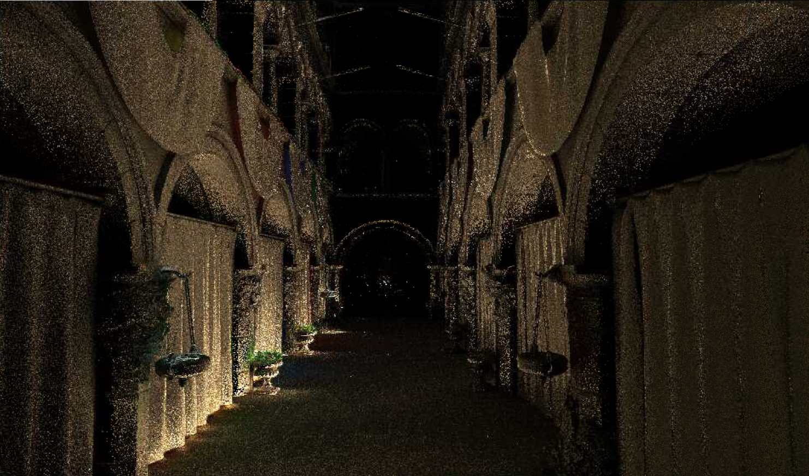

SSGI Implementation Summary
pipeline
{kind=link}
代码目录
- ssgi_common.hlsl 一些ssgi和ssgi_cs的共用函数，比如对gbuffer的处理等
- ssgi.hlsl 非compute shader实现的pass
- ssgi_cs.hlsl compute shader 实现的pass
- monte_carlo.hlsl 关于mote carlo importance sampling的一些utility函数实现
- ray_cast.hlsl ray marching的实现，包括linear和hi-z
- ssgi_spatial_filtering.hlsl ssgi denoising的spatial实现
- ssgi_temporal_filtering.hlsl ssgi denoising的temporal实现
generate hi-z & hi-color mip map
用一个compute pass 生成 一张1/2 resolution（考虑ray marching的性能）的 depth 和 deferred shading 结果的多 mip level 贴图。
- hi-z depth map 每四个像素计算最小的depth存入下一个mip level的对应像素 看了ue的源码里有ClosestHZB和FurthestHZB，一开始不太理解，后来看到别的方案才明白过来，他们的depth图应该有存最小的几个depth，然后在求里面的最大最小(还未验证)。
- hi-color map 原理是根据采样点的linear_depth和四个点最小的linear_depth差值来作为权重对color做filtering.
{kind=link}
{kind=link}
{kind=link}
{kind=link}
tile classification
就是希望通过一些前期的预判减少实际ray marching的无用rays.
ray marching
分别对于diffuse 和 specular 进行不同的ray marching算法，ray marching提供最大的rays num和steps的配置。
importance sampling
跟采样相关的实现都放在monte_carlo.hlsl.
diffuse
- sampling 通过rendering equation可以得出，diffuse使用cosine分布的importance sampling是比较合适的 为了使得结果更快的收敛，对一开始的单位圆盘随机采样的结果乘以了一个小于1的bias，使得更多的往normal方向采样。 采样得到的结果就是light direction.
- rendering
cosine sampling最后计算lighting的时候，需要把所有采样到的color求和除以N，然后乘以当前材质的albedo，这个放到最后apply to final 的时候做。
specular
- sampling
分两种情况
- roughness < 0.1 基本近似于镜面反射，所以直接调reflect函数计算反射方向
- roughness >= 0.1 使用的是visible normal GGX importance sampling来采样得到half vector的方法。 http://jcgt.org/published/0007/04/01/ 大致原理是根据normal的tangent space下的view vector方向做投影，然后在投影平面区域做均匀随机采样，再映射回去
- rendering 每个采样到的color要乘以fresnel项和G_SMITH_L项再除以N才是最终的rendering result，这个放在ray marching的时候计算。
{kind=link}
{kind=link}
{kind=link}
{kind=link}
{kind=link}
doubts
这里的采样结果除以的N都是hit==true的点的个数，这个就会造成一个问题就是rays越多越亮，使用总发射的rays个数整体又会太暗，而且感觉也有点不合理，所以这里是有点疑惑的。
before ray marching
关于screen space 和 view space 下的插值换算需要搞搞清楚，要做perspective correct interpolation，不然之后的ray marching 计算交点会有问题。 chrome-extension://cdonnmffkdaoajfknoeeecmchibpmkmg/assets/pdf/web/viewer.html?file=https%3A%2F%2Fwww.comp.nus.edu.sg%2F~lowkl%2Fpublications%2Flowk_persp_interp_techrep.pdf 简单的说就是
{kind=link}
- 屏幕空间的uv插值的scale和view space下的不一样，如图中的s和t
- 屏幕空间的uv线性插值并不等于view space下的linear depth线性插值，是linear_depth倒数的线性插值
diffuse linear ray marching
diffuse为了性能考虑，且diffuse不需要很精确的hit result，所以采用view_space下linear ray marching的方式。
计算ray的view space下的起点，终点，步长
给定一条ray的方向
- 先根据max_ray_trace_distance, camera的near plane distance 和 far plane distance计算出ray的终点
- 然后计算ray的终点是否超出camera frustum的范围，如果超出要clip到frustum的边界 注意这里的clip scale需要做perspective-correct interpolation
- 最后根据steps num算出每一步的步长
linear ray marching
linear的算法比较简单，就是在view space下每一步走一个固定的步长，通过比较每一步的depth和hi-z采样得到的depth来判断是否打到物体。 - 和 camera look-at 相同方向的 ray 如果ray的depth比hi-z采样得到的depth大超过一个thickness threshold就算打到。
- 和 camera look-at 相反方向的 ray 一般刚开始的时候ray的depth都比hi-z depth小一些，所以当ray的depth比hi-z depth大且在没有超过一定threshold的就算打到。
- 走的越远，mip map level越大 越远会在更大的范围上取color，所以相应的求交的范围也越大。  diffuse ray marching的结果
{kind=link}
specular ray marching
specular 因为需要更加精确的hit result，所以采用hi-z ray marching的方式。
计算ray在screen space下的一些数据
主要是根据ray的world space下的方向计算起点和一定步长下的一个终点的screen space uv 和 linear depth，然后根据perspective-correct interpolation对ray marching的点进行插值。
hi-z ray marching
- principle
 大致的原理是根据是否hit来不断增大或者缩小hi-z texture的mip level.
大致的原理是根据是否hit来不断增大或者缩小hi-z texture的mip level. - code
重点解释下是如何实现每次只前进一个pixel(不同mip level的pixel大小不同)
- 先根据当前mip level计算出resolution是多少
- 再根据screen space的ray方向将当前点挪到当前pixel的corner上 eg. u<0, v<0, 就是归到左上角去，于是cross_step = (0, 0), cell_id就是左上角的点
- 再根据screen space的ray方向计算一个挪动到下一个pixel的offset值
- corner加上一个offset，然后除以screen direction取u,v中最小的步长得到下一步应该走到哪里
- 得到了下一步的uv，再根据perspective-correct interpolation计算下一步的linear depth
{kind=link}
{kind=link}
{kind=link}
{kind=link}
{kind=link}
denoising
chrome-extension://cdonnmffkdaoajfknoeeecmchibpmkmg/assets/pdf/web/viewer.html?file=https%3A%2F%2Flink.springer.com%2Fcontent%2Fpdf%2F10.1007%252F978-1-4842-7185-8_49.pdf 参考的是NVIDIA Real-Time Denoisers library (NRD) 里的ReBLUR算法的两步 ：
- REBLUR_Diffuse_PreBlur.cs.hlsl
- REBLUR_Diffuse_TemporalAccumulation.cs.hlsl
spatial filtering
主要作用是将一些outliers弱化。 - 8个采样点满足每一帧做随机旋转的poisson分布
- 加权的权重是一系列因素的合集
- view space 上的几何权重
- 是否在屏幕内
- screen uv 偏移的guassian权重
- normal
- 对于specular的材质还有roughness(我们的specular暂时没考虑spatial filtering)
temporal filtering
diffuse
- 判断上一帧是不是在屏幕内
- 判断当前帧的物体上一帧有没有被遮挡 之前用过normal做判断发现会在边缘点闪烁，所以改用roughness 实际NV的实现用了别的方式，但是目前roughness效果也还可以
- 对history采用catmullrom的算法作filtering
- 根据当前像素temporal累计的帧数进行累加，最多64 其实本质是求平均
specular
目前采用和diffuse一样的算法，但累计的帧数要少一些，diffuse是64帧，specular是16帧 当然对变化比较快的地方，会有一点lag, 但目前的场景感觉还可以。 之后可以考虑用NV的两种方案做下改进。
apply to final
- diffuse 和 specular的结果叠加到原来deferred shading的结果上
- diffuse项要乘一个albedo, 是要把importance sampling的结果求rendering的结果
future work
性能上
- color resolve 之前resolve的方案是把多个ray的hit uv做平均，觉得不是合理，所以暂时舍弃。 但是之前有结果显示，resolve对于性能的提升是比较大的，毕竟复用了周围pixel的rays. 之后会考虑把多个ray的hit uv都保存下来，再加上importance sampling等计算看下结果。
- compute shader 中间也试过把ray marching的步骤改成compute shader来实现，发现结果并没有很好。 虽然有一点提升，但结果很受thread group size的影响，这个在不同配置的电脑上是不是也会不一样也有待验证。 所以现在基于debug的便利性和考虑所有配置的适配性还是用vertex, pixel shader去实现。 denoising的pass也可以改成compute shader都试一试。
denoising
https://github.com/NVIDIAGameWorks/RayTracingDenoiser/tree/master/Source 现在的denoising只是借鉴了NV实现的两步，但是NV REBLUR的方案性能上也是比较费的。 这个之后有时间要把NV REBULR，SVGF包括shadow去噪的方案再好好实现下，之后可以直接用在RT或者其他GI算法的去噪上。